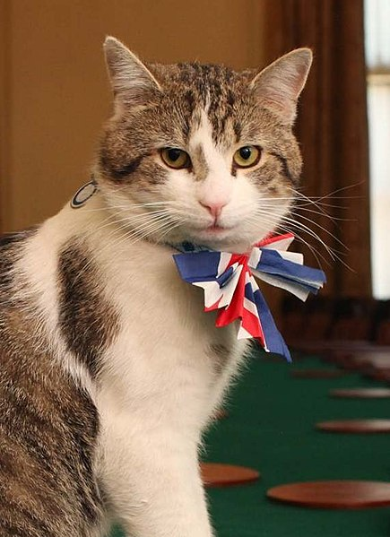

Historiek van Chief Mouser
Chief Mousers hebben in het verleden elkaar soms overlapt.
Maar er zijn ook periodes geweest dat er geen Chief Mouser was.
Op dit moment is Larry de enige Chief Mouser volgens de website van Downing Street 10.

- 1924 - 1930
- 1929 - 1946
- 1937 - 1943
- 1940s
- 1946 - 1947
- 1947 - 1964
- 1964 - 1976
- 1973 - 1986
- 1989 - 1997
- 2007 - 2009
- 2012 - 2014
- 2011 - ...